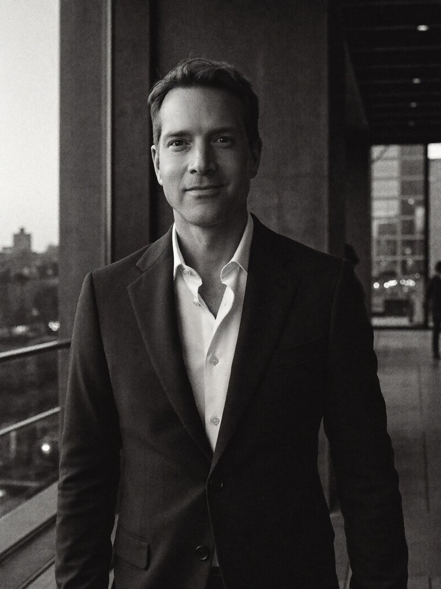

Nachfolge · Wegzug · Restrukturierung · Family Office
Strukturierungsmandate für Unternehmerfamilien – geführt vom Partner, mit Zielfokus Schweiz, Liechtenstein, Luxemburg.
Nachfolge, Wegzug und Restrukturierung sind keine rein rechtlichen Fragen. Sie erfordern einen Partner, der strategisch denkt, operativ handelt und Verantwortung übernimmt – auch als Organmitglied oder Family Office Sparringpartner.
Cassidy Partners verbindet juristische Präzision mit unternehmerischer Erfahrung. Wir führen Projekte von der Konzeption bis zum Closing – persönlich, effizient und ohne Delegationsverlust.
Unsere Mandate sind anspruchsvoll. Unsere Mandanten auch.
16–24 Wochen · grenzüberschreitend · vollständig umgesetzt
Eine Unternehmerfamilie der zweiten Generation mit Vermögen in operativen Gesellschaften (DACH), Immobilien und liquiden Assets. Ziel: langfristige Vermögenssicherung, klare Familien-Governance, Asset-Protection und eine steuerlich robuste Struktur für den Generationenwechsel.
ReferenzprojektAufnahme der Familienstruktur, des Begünstigtenkreises und der Ausschüttungslogik. Steuer- und Substanz-Check (D / CH / FL). Zielbild: Liechtensteinische Stiftung mit externer Stiftungsratsbesetzung und nachgelagerter FL-GmbH als Holding der eingebrachten Unternehmensgruppe und zukünftiger Beteiligungen.
Erarbeitung von Stiftungsverfassung und Begünstigtenreglement. Konzeption von Protektorat und Beirat. Detaillierter Steps-Plan und Koordination der Steuerexperten in Deutschland und Liechtenstein.
Vertiefte grenzüberschreitende Steueranalyse. Einholung verbindlicher Tax Rulings in Liechtenstein. Sicherstellung einer steuerlich optimalen Migration der Beteiligungen in die Holding.
Koordination der Rechtsberater in Deutschland und Liechtenstein. Erstellung der vollständigen Dokumentation. Betreuung von Signing und Closing – aus einer Hand.
Fortlaufende Begleitung der Stiftungsstruktur. Übernahme von Organfunktionen im Stiftungsrat und der Holding. Reporting, Compliance, jährliche Governance-Review.
Family Offices haben Fragen, die keine Standardsoftware beantwortet. Beteiligungen, die nicht in vorgefertigte Reporting-Schablonen passen. Stiftungen, deren Begünstigtenlogik kein Asset-Manager-Tool kennt. Excel-Inseln, die niemand mehr ablösen will, weil die Kosten einer klassischen Agentur das Problem nicht rechtfertigen.
Wir bauen – gemeinsam mit unserem technologischen Partner – das, was im jeweiligen Mandat tatsächlich gebraucht wird. Punktgenau, in Wochen statt Quartalen, ohne Ablösung der bestehenden Hausverwaltungen, Steuerberater und Bankbeziehungen. Das gezeigte Beispiel ist ein konsolidiertes Reporting-Cockpit für ein Immobilienportfolio über drei Jurisdiktionen – eine Anwendung von vielen.

Rund 20 Jahre Erfahrung an der Schnittstelle von Recht, Transaktionen und unternehmerischer Verantwortung – in führenden Kanzleien ebenso wie in operativer Linienfunktion internationaler Konzerne und Family-Investment-Strukturen.
Was Cassidy Partners auszeichnet: David Barst übernimmt Mandate persönlich. Keine Delegation, kein Junior-Team. Für jede Aufgabe stellt er das passende Spezialisten-Team aus einem etablierten Netzwerk zusammen – steuerlich, juristisch, treuhänderisch. Effizient, pragmatisch und konsequent umsetzungsorientiert.
Wir freuen uns auf den Austausch – vertraulich und unverbindlich.